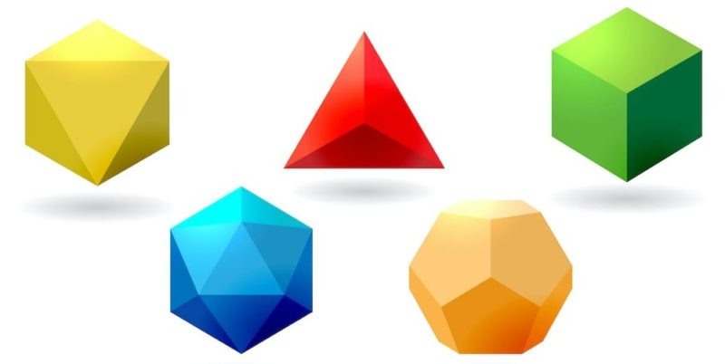

Poliedro.
Un poliedro es, en el sentido dado por la geometría clásica al término, un cuerpo geométrico cuyas caras son planas y encierran un volumen finito. La palabra poliedro viene del griego clásico πολύεδρον (polyedron), de la raíz πολύς (polys), «muchas» y de ἕδρα (hedra), «base», «asiento», «cara».
Los poliedros se conciben como cuerpos tridimensionales, pero hay semejantes topológicos del concepto en cualquier dimensión. Así, el punto o vértice es el semejante topológico del poliedro en cero dimensiones, una arista o segmento lo es en 1 dimensión, el polígono para 2 dimensiones; y el polícoro el de cuatro dimensiones. Todas estas formas son conocidas como politopos, por lo que podemos definir un poliedro como un polítopo tridimensional.
